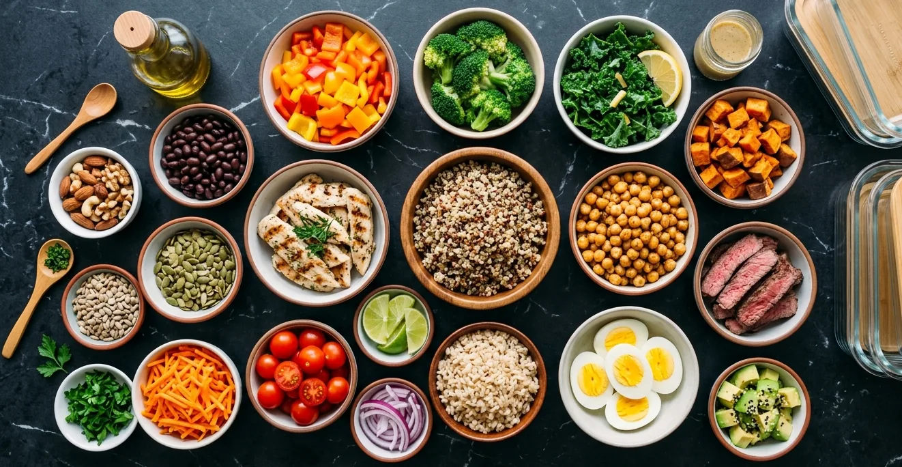
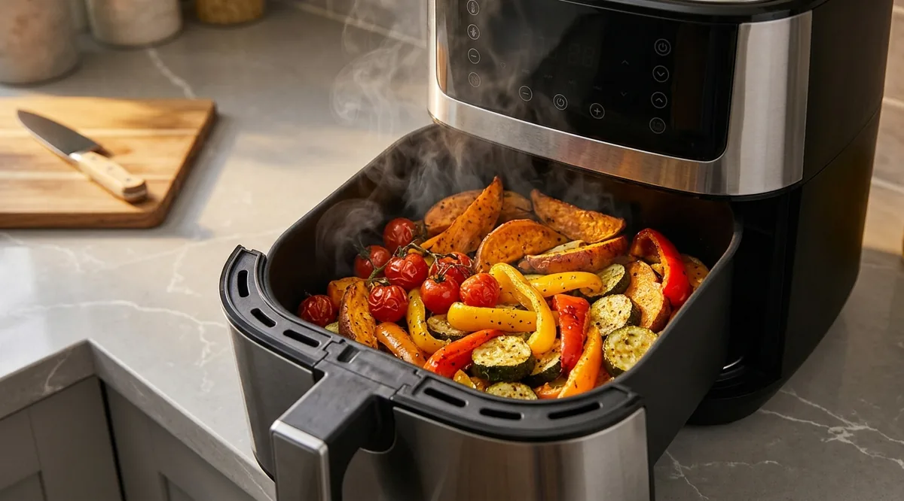

Best Meal Prep Ideas for Busy Professionals (Healthy + Fast)
The most effective meal prep for busy professionals focuses on batch-cooking proteins, grains, and vegetables separately — then mixing and matching throughout the week. This gives you variety without extra cooking time. 45 minutes on Sunday covers 4–5 days of lunches and simplifies every dinner.

As an Amazon Associate I earn from qualifying purchases.
Sunday night. You're staring at the fridge, exhausted, knowing that if you don't do something now, you'll be scrambling for food every single day this week. Again.
Meal prep doesn't have to be a four-hour production with matching Tupperware and color-coded labels. The bestmeal prep for busy professionalsis fast, flexible, and built around real life — not an ideal version of it.
Here's a practical system that takes 45–60 minutes on Sunday and sets you up for the entire week.
Quick Answer
The most effective meal prep for busy professionals focuses on batch-cooking proteins, grains, and vegetables separately — then mixing and matching throughout the week. This gives you variety without extra cooking time. 45 minutes on Sunday covers 4–5 days of lunches and simplifies every dinner.
Why Meal Prep Fails for Most Busy Adults
Most people quit meal prep because they make it too rigid. They prep full meals — the same chicken and rice, five days in a row — and by Wednesday they'd rather order pizza than eat it again.
The fix: prep ingredients, not meals. Cook proteins, grains, and vegetables separately. Then combine them differently each day. Monday is chicken with roasted vegetables and quinoa. Tuesday is the same chicken in a wrap with avocado. Wednesday is the vegetables over rice with a fried egg on top. Same prep, completely different meals.
The Best Meal Prep Ideas for Busy Professionals
The Sunday Setup: What to Prep
Focus on these five categories and you'll have building blocks for every meal:
1. Batch Protein (20 Minutes)
Cook one large batch of protein that works across multiple meals:
- Chicken thighs— more forgiving than breast, stays moist for days
- Ground beef or turkey— versatile across bowls, wraps, and pasta
- Hard-boiled eggs— 8–10 at once, ready to grab all week
- Canned fish— no cooking required, high protein, long shelf life
TheMultifunctional Digital Air Fryercooks chicken thighs in 18–20 minutes with zero supervision — crispy outside, juicy inside, minimal cleanup. Season a large batch and you're done. For soups, stews, or bulk grains, theElectric Pressure Cookercuts cooking time in half — dried chickpeas in 35 minutes, pulled chicken in 20.
2. Cook a Grain Base (15 Minutes Hands-Off)
A large pot of grains takes 15–30 minutes with almost zero active time:
- Brown rice — filling, versatile, keeps well for 5 days
- Quinoa — higher protein, cooks in 15 minutes
- Farro or barley — more interesting texture, great for salads
Cook while your protein is in the air fryer. Two things at once, same 20 minutes.
3. Roast a Sheet of Vegetables (20 Minutes)
Roasted vegetables are the most versatile meal prep ingredient — they work in bowls, wraps, omelets, and pasta. Toss any combination with olive oil and salt, spread on a sheet pan, and roast at 425°F for 20–25 minutes.
Best options for busy weeks: broccoli, sweet potato, zucchini, bell peppers, cauliflower. They all roast at the same temperature and keep well for 4–5 days.
4. Prep Grab-and-Go Snacks (5 Minutes)
Portion snacks into individual containers so they're ready to grab without thinking:
- Nuts in small bags or containers
- Cut vegetables with hummus
- Greek yogurt portioned into individual servings
Glass Meal Prep Containersgo from fridge to microwave without transferring — and glass keeps food fresher longer than plastic. Having snacks pre-portioned means you grab the right thing instead of whatever is fastest when you're hungry.
5. Pre-Make One Breakfast Option
Remove one morning decision entirely:
- Overnight oats portioned into 5 jars
- A batch of egg muffins (eggs baked in a muffin tin with vegetables)
- Pre-measured smoothie bags in the freezer — dump in blender, add liquid, done
TheNutribullet Full-Size Blendermakes morning smoothies genuinely fast — 60 seconds to blend, 30 seconds to rinse. Pre-portion your smoothie ingredients into freezer bags on Sunday and your breakfast takes 90 seconds all week.
The Mix-and-Match Formula
With your five components prepped, every meal becomes a simple assembly:
- Lunch bowl:grain base + protein + roasted vegetables + sauce
- Wrap:protein + vegetables + avocado in a tortilla
- Salad:greens + grain + protein + olive oil and lemon
- Quick dinner:protein + vegetables + whatever sauce you feel like
Same five ingredients. Completely different meals. No food boredom, no extra cooking.
Stay Hydrated W boredom, no extra cooking.
Stay Hydrated While You Work
Meal prep covers food — but hydration is equally important for energy and focus during the workday. TheSmart Water Bottle with Remindertracks your daily intake and prompts you to drink throughout the day. Mild dehydration causes fatigue and brain fog that most people attribute to hunger — solving it is often faster than eating.
Recommended Products
| Product | Why It Helps | Link |
|---|---|---|
| Multifunctional Air Fryer | Batch-cooks protein in 20 minutes — zero supervision, minimal cleanup | View on Amazon |
| Electric Pressure Cooker | Grains, soups, and proteins in half the normal cooking time | View on Amazon |
| Glass Meal Prep Containers | Fridge to microwave, keeps food fresh longer than plastic | View on Amazon |
| Nutribullet Full-Size Blender | 90-second smoothies — fastest protein breakfast available | View on Amazon |
| Smart Water Bottle | Tracks hydration and reminds you to drink throughout the workday | View on Amazon |
Disclosure: We may earn a small commission if you purchase through our links, at no extra cost to you. We only recommend products we'd genuinely use ourselves.

Common Meal Prep Mistakes
- Prepping full meals instead of ingredients— eating the same complete meal five days in a row leads to food fatigue and abandoning the system
- Overcomplicating recipes— roasted vegetables and grilled protein don't need a recipe. Simple is sustainable
- Not storing food properly— glass containers extend freshness significantly; poorly stored food goes bad mid-week and the system falls apart
- Skipping snack prep— unprepped snacks mean you grab whatever is fastest when hungry, usually the wrong thing
- Trying to prep for 7 days— most prepped food stays good for 4–5 days. Prep Sunday for the first half of the week; do a quick mid-week refresh on Wednesday if needed
FAQ
Q: How long does meal prepped food actually last?
Most cooked proteins and grains last 4–5 days refrigerated. Roasted vegetables last 3–4 days. Hard-boiled eggs last up to a week. For longer storage, freeze portions at the start of the week and thaw as needed.
Q: Do I need special equipment for meal prep?
An air fryer or pressure cooker dramatically speeds up the process, but you can meal prep with just a regular oven and stovetop. The equipment reduces active cooking time — it doesn't change the fundamentals.
Q: What if I hate eating the same things every week?
Change your sauce and seasoning profile each week while keeping the same core ingredients. The same chicken and vegetables taste completely different with teriyaki versus lemon-herb versus taco seasoning.
Q: Is meal prep worth it if I only have 30 minutes on Sunday?
Yes — even partial prep helps. If you only have 30 minutes, prioritize protein (hardest to cook quickly) and snacks (highest decision fatigue). Everything else can be assembled fresh in minutes with prepped protein on hand.
Q: How do I avoid getting bored with meal prepped food?
Keep one wildcard meal per week — one dinner where you cook something fresh and different. This prevents meal prep from feeling like a prison sentence while still giving you the efficiency benefits for the other meals.
Final Tip
The bestmeal prep for busy professionalsisn't about perfection — it's about having something better than nothing ready when hunger and exhaustion hit at the same time.
This Sunday, set a timer for 45 minutes and prep just three things: a batch of protein, a grain, and one tray of roasted vegetables. That's it. You'll eat better all week with less effort than ordering takeout every day.
That's one small daily move — exactly the kind that adds up to a big lifetime gain.
Want more practical health habits for busy adults? Browse our guides at EverydayFitHabits.com — built for people who don't have time to waste.